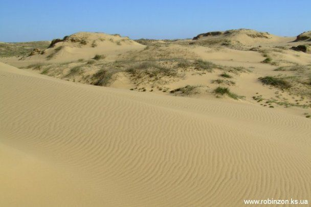
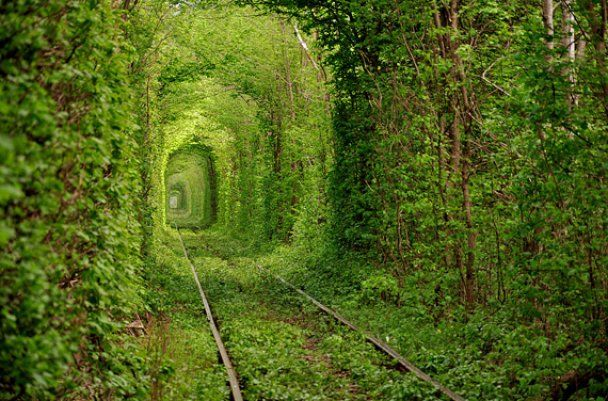
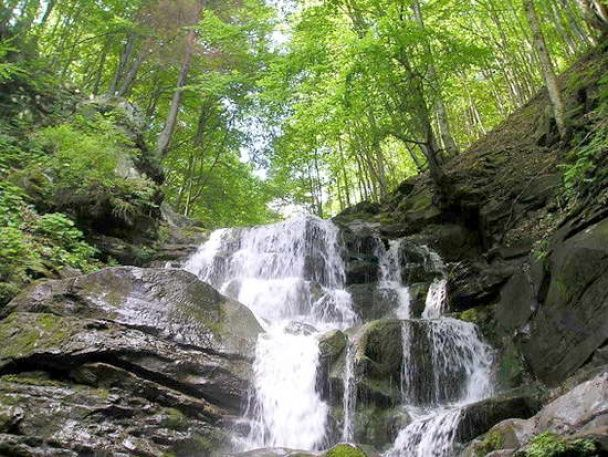

Олешківська пустеля

200 гектарів гарячого піщаного моря, яке приховує на своєму дні багато таємниць знаходиться у
Цюрупінському районі за 30 кілометрів на Схід від Херсона.
Сьогодні, Олешківська пустеля вважається найбільшим піщаним масивом Європи, який складається
із семи так званих арен. Усі вони горбисті, із коливанням висот до 20 метрів.
Крім того, тут на глибині 300-400 метрів знаходиться прісне підземне озеро із дуже смачною водою,
а посеред пустелі лежить один із унікальних витворів природи – оазис.
Клевань. Тунель кохання.

Це найромантичніше місце Волині, яке вважається ботанічним феноменом і знаходиться вздовж
залізничної колії між селищами Клевань та Оржів.
Утворений був тунель заростями дерев і кущів, які щільно сплелися між собою у арочній формі.
Також, серед молодят поширилася традиція саджати тут квіти, які символізують їхні почуття.
Водоспад Шипіт

Мальовничий водоспад розташований у глибокій ущелині річки Пилипець на північних схилах
гірського масиву полонини "Боржава" Карпатського регіону.
Це один із найкрасивіших водоспадів України, куди кожного року приїжджають
десятки тисяч туристів, щоб помилуватися ним.
Струмені води водопаду зриваються з 14-метрової висоти декількома каскадами і розсіюються хмарою крапель.
 Найдовший в Україні Дністровський каньйон захоплює одразу чотири області: Івано-Франківську,
Хмельницьку, Чернівецьку та Тернопільську. Його довжина 250 км.
Найдовший в Україні Дністровський каньйон захоплює одразу чотири області: Івано-Франківську,
Хмельницьку, Чернівецьку та Тернопільську. Його довжина 250 км.